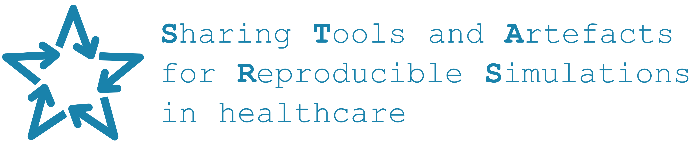

2 Introduction
This book describes work from work package 1 of the project STARS: Sharing Tools and Artefacts for Reproducible Simulations in healthcare.

The project was funded for two years by the Medical Research Council, from April 2024 to April 2026. Prior to this funding, some pilot work was carried out by Tom Monks, Alison Harper and Nav Mustafee. This included a review of code sharing practices and the development of the STARS framework.
2.1 General context
Baker (2016) - survey of 1576 researchers across disciplines, finding:
- “More than 70% of researchers have tried and failed to reproduce another scientist’s experiments”
- “More than half have failed to reproduce their own experiments”
- 52% “agree that there is a significant ‘crisis’ of reproducibility”
- “Less than 31% think that failure to reproduce published results means that the result is probably wrong, and most say that they still trust the published literature”
Differences between reproduction and replication
- Reproduction - using their code
- Replication - writing your own code
(I.e. terminology I researched previously, computational reproducibiltiy etc, similar to how lots of articles define it, e.g. Samuel and Mietchen (2024)).
Korbmacher et al. (2023) - great discussion of the replication crisis
On the protocol page, several reproducibility studies are mentioned, which were used to help inform the methods in our reproducibility assessments.
2.2 Pilot work
2.2.1 Review of healthcare simulation sharing practices
Monks and Harper (2023) explored how discrete-event simulation (DES) models used in a health context (e.g. health services, health economics) were shared and whether this sharing adhered to best practice. The full study can be viewed at:
Monks, Thomas, and Alison Harper. 2023. “Computer Model and Code Sharing Practices in Healthcare Discrete-Event Simulation: A Systematic Scoping Review.” Journal of Simulation 0 (0): 1–16. https://doi.org/10.1080/17477778.2023.2260772.
In summary, they identified 564 papers describing a DES model from a health context published from 2019 to 2022. Of these, only 8.3% (47/564) had available model code (either sharing the code themselves, or citing an openly available model). Looking by year, this rose from 4.0% for studies published in 2019, to 9.0% for 2022.
Further findings:
- More likely that code was shared if model was:
- Created using free and open source software (FOSS) (28.7%, 29/101)
- A COVID-19 model (24.6%, 17/69)
- Of the papers that did share a model:
- Most were written in a programming language (66%, 31/47), the rest in a commercial off the shelf Visual Interactive Modelling (VIM) software
- These were evaluated in a best practice audit, with the results as follows: “In general, computer models and artefacts were published without a DOI (n = 7); rarely included ORCIDs for authors (n = 6); rarely included an open licence (n = 21); were mostly supported by a README file (n = 28); rarely included documentation detailing how to run the model (n = 15); provided no form of formal or informal dependency management (n = 21); did not include any evidence of model testing (n = 3); were almost all downloadable (n = 38); and rarely executable via a cloud-based platform (n = 10).” (Monks and Harper (2023))
- Few studies used a reporting guideline (12.8%, 72/564) - mostly using:
- One of the International Society for Pharmacoeconomics and Outcomes Research (ISPOR) publications (n=37), or
- The Strengthening the Reporting of Empirical Simulation Studies (STRESS) guidelines from Monks et al. (2019) (n=22)
The review concludes that “there are many (simple) best practices the community can adopt, such as the use of trusted archives, and documentation, to improve its sharing”. (Monks and Harper (2023))
2.2.2 Pilot STARS framework
Monks, Harper, and Mustafee (2024) introduces a pilot framework for sharing DES models called STARS: Sharing Tools and Artefacts for Reusable Simulations. Note that this “reusable” is changed into “reproducible” for the STARS project as we build on this work in the current project.
The pilot STARS framework consists of essential components (minimum to make models “long-term, citable, functional, appropriately licenced”) and optional components (enhance model “accessibility, understanding, and maintainability”). (Monks, Harper, and Mustafee (2024))
The essential components are:
- Open licence
- Dependency management
- FOSS model
- Minimum documentation
- Open Researcher and Contributor IDs (ORCID)
- Citation information
- Remote code repository
- Open science archive
The optional components are:
- Enhanced documentation
- Documentation hosting
- Online coding environment
- Model interface
- Web app hosting
This is summarised in the diagram below…

This was supported by example implementations in Python:
- Example 1 - stars-treat-sim
- Example 2 - stars-streamlit-example and stars-simpy-example-docs - with web app and hosted docs
- Example 3 - stars-ciw-example - with web app and hosted docs
2.3 STARS project
The MRC-funded STARS project builds on this pilot work. As stated in the funding application, the objective of this project is “to improve the quality and quantity of shared discrete-event simulation models, tools and other research artefacts:
- Identify barriers, and good practices for sharing simulation models;
- Develop a new framework for sharing computer models applicable the most common free and open-source languages;
- Test the framework in both retrospective and prospective case studies;
- Develop online interactive training materials;
- Transfer knowledge of our STARS framework to health data science researchers;
- Ensure sustainability of materials;
- Support our partner archival journals adopt open science principles and our findings;”
This objectives will be achieved through four work packages:
Work package 1: Reproducibility of computational results
- Assess the computational reproducibility of six published DES models created in Python and R.
- Evaluate the publication, code and associated artefacts against reporting guidelines, best practice for code sharing, and criteria from journal artefact badges.
Work package 2: R and Python framework for sharing DES models
- Improve the pilot framework (e.g. extend baesd on barriers and enablers to reproduction observed in work package 1, and making it relevant to R models)
- Provide time-saving measures for researchers (e.g. automated support for STRESS, use of large language models (LLM) to support creating of summaries, automated testing of models, continuous integration tools)
Work package 3: Prospective and retrospective application of the framework
- Apply STARS framework within two case studies (one prospective and one retrospective)
Work package 4: Training
- Develop online interactive training materials to support researchers in using the STARS framework
From this point onwards, this site/book summarises the findings from work package 1.